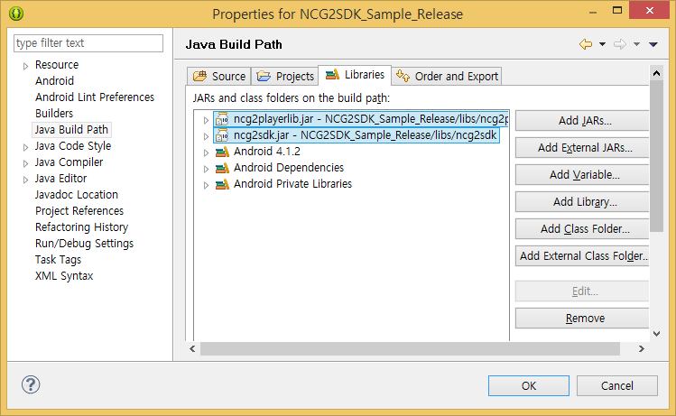
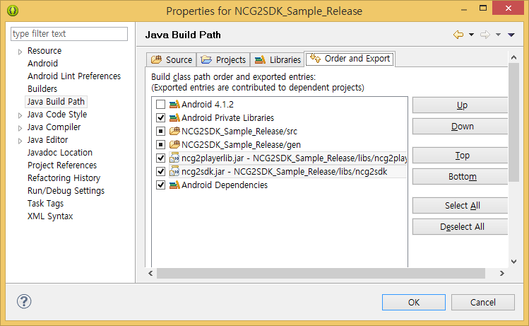

|
NCG SDK for Android Build 20231120
INKA Entworks NCG DRM Library for Android
|
|
NCG SDK for Android Build 20231120
INKA Entworks NCG DRM Library for Android
|
NOTE This document is prepared in accordance with the following environment.
For the installation of PallyCon Android SDK, only copy the files. Since PallyCon Android SDK consists of jar and so files, there’s no need of a separate installation but just copy the appropriate files to the library folder (libs) of Application project to which SDK applies. As shown in demo project, in order to apply PallyCon Android SDK to a separate project, you can set project according to the following steps:
Copy so files to libs/armeabi folder.
Copy ncg2sdk.jar file to libs folder.
As shown in the following figure, add ncg2sdk.jarfile to "Java Build Path".


NOTE In case of managing jar files by generating another folder in libs folder within project, FATAL error may occur when running App. In this case, check ncg2sdk.jar on "Order and Export" tab.
For a normal use of PallyCon Android SDK, the authorizations to be basically required are as follows: Item | Description -|- READLOGS | Authority to read LOG INTERNET | Authority to use network WRITEEXTERNALSTORAGE | Authority to use external storage READPHONESTATE | Authority to read the status of device MOUNTUNMOUNT_FILESYSTEMS | Authority to edit file system
Core object is generated only one while App is running in a single tone.
public class DemoLibrary {
...
static Ncg2Agent g_ncgAgent = Ncg2SdkFactory.getNcgAgentInstance();
public final static Ncg2Agent getNcgAgent() {
return g_ncgAgent;
}
...
}In order to use Ncg2Agent object, necessarily perform the initialization work through init() method. In general, init() method of Ncg2Agent is called at a time when App starts (onCreate of android.app.Application). It is noted that if internal methods are called when Ncg2Agent object has not been initialized or already released, an error occurs.
Item | Description -|- NotSupportOffline | Not support offline mode OfflineSupport | Support offline mode
If you set the offlice policy to 'OfflineSupport' then you can limit the count of execution. The default limit count is 10 and the value can be changed by calling the method of setCountOfExecutionLimit of OfflineSupportPolicy enum class.
public class DemoApplication extends Application {
...
@Override
public void onCreate() {
super.onCreate();
initializeNcgAgent();
}
private void initializeNcgAgent() {
try {
DemoLibrary.getNcgAgent().setHttpRequestCallback(mHttpRequestCallback);
Ncg2Agent.OfflineSupportPolicy policy = Ncg2Agent.OfflineSupportPolicy.OfflineSupport;
policy.setCountOfExecutionLimit(20);
DemoLibrary.getNcgAgent().init(this, policy);
DemoLibrary.getNcgAgent().enableLog();
} catch (Ncg2Exception e) {
e.printStackTrace();
String errorMsg = "Exception in init() : " + e.getMessage();
Log.e(DemoLibrary.TAG, errorMsg);
Toast.makeText(this, errorMsg, Toast.LENGTH_LONG).show();
}
}
...
}To control Local File inside PallyCon Android SDK, you can implement LocalFileCallback in the app and set the callback after initialization. To set the LocalFileCallback callback object, Ncg2Agent.setLocalFileCallback method is used.
public class DemoApplication extends Application{
private Ncg2Agent.LocalFileCallback mLocalFileCallback = new Ncg2Agent.LocalFileCallback() {
@Override
public Boolean fileOpen(String filePath, String openMode, int cloneNum) throws NcgLocalFileException {
...
}
@Override
public void fileClose(int cloneNum) throws NcgLocalFileException {
...
}
@Override
public byte[] fileRead(long numBytes, int cloneNum) throws NcgLocalFileException {
...
}
@Override
public long fileWrite(byte[] data, long numBytes, int cloneNum) throws NcgLocalFileException {
...
}
@Override
public long getFileSize(int cloneNum) throws NcgLocalFileException {
...
}
@Override
public long setFilePointer(long distanceToMove, int moveMethod, int cloneNum) throws NcgLocalFileException {
...
}
}
private void initializeNcgAgent() {
...
DemoLibrary.getNcgAgent().setLocalFileCallback(mLocalFileCallback);
...
}
}In order to use the content applying DRM, you must be obtained a license. Licensed file contains the authorization of content including effective period, play count, and whether TV-out is permitted, etc. Thus, playing the content requires the issuance of license from the server; if there’s no license or if any, it is not valid, using DRM content shall be restricted. For the confirmation of license, the functions to be provided by PallyCon Android SDK are as follows:
interface Ncg2Agent{
// Confirm whether a file situated in the entered path and URL is NCG file.
public boolean isNcgContent(String strFileOrURL) throws Ncg2Exception
// Confirm the license of file situated in the entered path and URL for validity.
public boolean isLicenseValid(String strFileOrURL) throw Ncg2Exception
// Confirm the license of content for validity.
public LicenseValidation checkLicenseValid(String path) throws Ncg2Exception
}LicenseValidation enum type returned from checkLicenseValid method is as follows:
Item | Description -|- ValidLicense | Valid license NotExistLicense | No license or invalid license ExternalDeviceDisallowed | License with external output device disallowed RootedDeviceDisallowed | License disallowed from rooted terminal ExpiredLicense | Expired license ExceededPlayCount | License with play count exceeded DeviceTimeModified | Detected the device time modified OfflineNotSupported | Failed to access server and detected offline in the course of initializing under the policy not supporting offline mode OfflineStatusTooLong | A state necessary of online mode because of too many cases executed offline. For more information, refer to the following note. NotAuthorizedAppID | Failed to initialize since the executing App is not authenticated in server ScreenRecorderDetected | Detected a screen recording app
In Sample Project, confirm license for validity in the following order.
if( DemoLibrary.getNcgAgent().isNcgContent(path) == false ) {
return true;
}
Ncg2Agent.LicenseValidation validation = DemoLibrary.getNcgAgent().checkLicenseValid(path);
if( validation == LicenseValidation.ValidLicense ) {
// Routine to process license for validity
...
} else if( validation == LicenseValidation.NotExistLicense ) {
// No license or invalid license
...
// Request license to license server
DemoLibrary.getNcgAgent().acquireLicenseByPath( path, DemoLibrary.getUserID(), DemoLibrary.getOrderID() );
if( DemoLibrary.getNcgAgent().checkLicenseValid(path) == LicenseValidation.ValidLicense ) {
// Acquire valid license from server
} else {
// Not acquire license from server
}
} else if( validation == LicenseValidation.ExternalDeviceDisallowed) {
// Not allow to play to the connection to external device such as HDMI device
...
} else if( validation == LicenseValidation.RootedDeviceDisallowed) {
// License not allowed in Rooting terminal.
...
} else if(validation == LicenseValidation.ExpiredLicense){
// Expired license
...
} else if(validation == LicenseValidation.ExceededPlayCount){
// Frequency license with play count exceeded
...
} else if(validation == LicenseValidation.ScreenRecorderDetected ){
// You can check the package name and the appName of screen recorder app.
HashMap<String,String> data = validation.getExtraData();
String appName = data.get("AppName");
String packageName = data.get("AppPackageName");
...
}NOTE In order to detect the cases where a user intentionally changes device time, in the other license types other than unlimited license, if it executes more than limit value set by setCountOfExecutionLimit method in the internal offline mode, OfflineStatusTooLong value is returned. OfflineStatusTooLong value is only operated when it is set as OfflineSupport parameter option at init() method called.
No license or expired license requires the issuance of license suitable for the applicable content. The license may be issued at any time before actual use; however, SDK Sample App Project tries to issue license at a time to play. The timing to issue license depends on App scenario, but the license is generally requested at a time to play. The functions supported by PallyCon Android SDK to issue license are as follows:
interface Ncg2Agent{
// Acquire license via the entered path with UserID and OrderID.
public void acquireLicenseByPath(String path, String userId, String orderId) throws Ncg2Exception
// Acquire license via the entered path with UserID and OrderID, there can be acquired temporary license by setting a temporary.
public abstract void acquireLicenseByPath( String path, String userID, String orderID, boolean temporary ) throws Ncg2Exception;
// Acquire license using Content ID.
public void acquireLicenseByCID(String cid, String userID, String orderID, String acquisitionURL) throw Ncg2Exception
// Acquire license using Content ID.
public void acquireLicenseByCID(String cid, String userID, String siteID, String orderID, String acquisitionURL) throw Ncg2Exception
// Acquire license using Content ID, there can be acquired temporary license by setting a temporary.
public abstract void acquireLicenseByCID(String cid, String userID, String siteID, String orderID, String acquisitionURL, boolean temporary ) throws Ncg2Exception;
}Unlike term license, frequency license requires confirming license information. If you use frequency license, the functions that deduct the frequency are provided by PallyCon Android SDK; and such deduction is conducted at a time when license is issued and virtual URL return is completed.
private OnPreparedListener mPreparedListener = new OnPreparedListener(){
@Override
public void onPrepared(MediaPlayer mp) {
...
if( mIsCountLimitedContent ) {
DemoLibrary.getNcgAgent().decreasePlayCount(mNcgFilePath);
}
...
}
}NOTE For remote content (PD/HLS), if network environment is not stable, license issuance and content playing may not be smoothly conducted. If there need acquire license whenever you play the content, it is preferable to acquire temporary license. For Downloaded Contents, if license has been issued, it may play in an environment without network. Thus, it is desirable to acquire license at a time that contents are completely downloaded (i.e., network is connected).
Already-issued license may be necessarily discarded in accordance with APP scenario. In this case, the functions related to license deletion are as follows, which you can use suitable for scenario. The temporary license may be terminated at any time after use; For the SDK Sample App Project, the license is terminated when the video play is stopped.
interface Ncg2Agent{
// Delete license via all CIDs of the issued licenses.
public void removeLicenseAllCID() throws Ncg2Exception
// Delete temporary license.
public abstract void removeAllTemporaryLicense() throws Ncg2Exception
// Delete license via CID.
public void removeLicenseByCID(strContentsID) throw Ncg2Exception
// Delete license of the content in the file path.
public void removeLicenseByPath(strFilename) throws Ncg2Exception
}If license is normally issued using PallyCon Androide SDK, using Ncg2LocalWebServer interface, you can control LocalWebserver located inside. If you designate the path of PallyCon content to play PallyCon content, it can be used in a form to return virtual URL. After obtaining virtual URL you can access MediaPlayer or 3th Party Player provided by Android for playing. The followings are virtual URL return functions provided by Ncg2LocalWebServer.
interface Ncg2LocalWebServer{
// In case of Local File,
public String addLocalFilePathForPlayback(Activity activity, String url, long fileSize) throws Ncg2InvalidLicenseException, Ncg2Exception;
// In case of PD contents,
public String addProgressiveDownloadUrlForPlayback(Activity activity, String url) throws Ncg2InvalidLicenseException, Ncg2Exception;
// In case of HLS,
public String addHttpLiveStreamUrlForPlayback(Activity activity, String url) throws Ncg2InvalidLicenseException, Ncg2Exception;
// In case of HLS (live),
public String addHttpLiveStreamUrlForPlayback(Activity activity, String url, boolean isLiveHLS) throws Ncg2InvalidLicenseException, Ncg2Exception;
// In case of HLS,
// unlike addHttpLiveStreamUrlForPlayback(), do not prior check key file equivalent to m3u8 path.
public String addHttpLiveStreamUrlForPlaybackWithoutChecking(Activity activity, String url) throws Ncg2InvalidLicenseException, Ncg2Exception;
// In case of HLS,
// You can call this method to add HLS url without accessing the URLs of m3u8 and key file.
public String addHttpLiveStreamUrlForPlayback(Activity activity, String url, String cid) throws Ncg2InvalidLicenseException, Ncg2Exception;
// In case of HLS (live),
// You can call this method to add HLS url without accessing the URLs of m3u8 and key file.
public String addHttpLiveStreamUrlForPlayback(Activity activity, String url, String cid, boolean isLiveHLS) throws Ncg2InvalidLicenseException, Ncg2Exception;
}The following code indicates how to obtain virtual URL from PallyCon contents.
public class PlayerActivity extends Activity {
...
@Override
protected void onCreate(Bundle savedInstanceState) {
Ncg2Agent ncgAgent = Ncg2SdkFactory.getNcgAgentInstance();
Ncg2LocalWebServer ncgLocalWebServer = ncgAgent.getLocalWebServer();
ncgLocalWebServer.setWebServerListener(mWebServerCallback);
ncgLocalWebServer.clearPlaybackUrls();
try {
if( mNcgFilePath.contains(".m3u8") ) {
// HLS Playback
mPlaybackURL = ncgLocalWebServer.addHttpLiveStreamUrlForPlayback(mNcgFilePath);
} else if(mNcgFilePath.startsWith("http://")) {
// PD Playback
mPlaybackURL = ncgLocalWebServer.addProgressiveDownloadUrlForPlayback(mNcgFilePath);
} else {
// Local Playback
mPlaybackURL = ncgLocalWebServer.addLocalFilePathForPlayback(mNcgFilePath, mNcgFileSize);
}
} catch (Ncg2Exception e) {
e.printStackTrace();
Toast.makeText(MediaPlayerActivity.this,
"[onCreate] Error Occured. : " + e.getMessage(), Toast.LENGTH_LONG).show();
return;
}
}
}NOTE HLS is supported in Android Media Player of more than Android 3.0. However, playing may not be smooth depending on device.
The following code indicates how to decrypt and use virtual URL.
try {
mPlayer.setDataSource(mPlaybackURL);
mPlayer.prepareAsync();
} catch (IllegalArgumentException e) {
e.printStackTrace();
errorMsg = e.getMessage();
} catch (IllegalStateException e) {
e.printStackTrace();
errorMsg = e.getMessage();
} catch (IOException e) {
e.printStackTrace();
errorMsg = e.getMessage();
}Ncg2LocalWebServer internally uses Web Server in a proxy form; the information of event from this Web Server outside SDK uses WebServerListener interface. As shown in the following codes, you can process notice or error of Ncg2LocalWebserver. It is noted that you confirm whether onCheckPlayerStatus()method is in an applicable state of player before returning.
private Ncg2LocalWebServer.WebServerListener mWebServerCallback = new Ncg2LocalWebServer.WebServerListener(){
@Override
public void onNotification(int notificationCode) {
//Most of notice codes should be ignored.
}
@Override
public void onError(int errorCode, String errorMessage) {
//Show the applicable user error message.
}
@Override
public PlayerState onCheckPlayerStatus(String uri) {
if (mIsPrepared) {
//Only when player can play, return
PlayerState.ReadyToPlay.
return PlayerState.ReadyToPlay;
} else {
// Block playing when PlayerState.Fail is returned.
return PlayerState.Fail;
}
}
};NOTE In order to prevent the case where a hacker accesses via virtual URL to download data, check the state of Player. When accessed via virtual URL but not under playing, it is to block decrypting.
PallyCon Android SDK provides the function to also decrypt ordinary NCG files. NcgFile object is returned from Ncg2Agent to proceed the order from open to read. The following is the function to be provided for NcgFile:
interface Ncg2Agent{
//Return NcgFile object.
public NcgFile createNcgFile();
interface NcgFile{
//Open NCG file.
public void open(String path) throws Ncg2InvalidLicenseException, Ncg2InvalidNcgFileException, Ncg2Exception;
//Set license and open NCG file.
public void open(String path, boolean prepare) throws Ncg2InvalidLicenseException, Ncg2InvalidNcgFileException, Ncg2Exception;
//Call the applicable method in a status after open and make it a status to enable decrypting.
public void prepare() throws Ncg2InvalidLicenseException, Ncg2InvalidNcgFileException, Ncg2Exception;
//Close the opened file.
public void close();
//Read content data from NCG file.
public long read(byte[] buff, long sizeToRead) throws Ncg2Exception;
//Move the location of file pointer to read.
public void seek(long offset, SeekMethod seekMethod) throws Ncg2Exception;
//Return the current location of file pointer.
public long getCurrentFilePointer() throws Ncg2Exception;
//Return the size of NCG file header.
public int getHeaderSize() throws Ncg2Exception;
//Return InputStream for NCG file.
public InputStream getInputStream() throws Ncg2Exception;
}
}
The following is a sample code to make original content using NcgFile object.
try {
String ncgFilePath = mFilePath;
ncgFile = DemoLibrary.getNcgAgent().createNcgFile();
ncgFile.open(ncgFilePath);
ncgFile.seek(0, SeekMethod.End);
// the original file's size will be used for checking success of decryption.
long contentFileSize = ncgFile.getCurrentFilePointer();
ncgFile.seek(0, SeekMethod.Begin);
int pos = mFilePath.lastIndexOf("/");
// removes ".ncg" in the path of NCG file
String unpackFilePath = ncgFilePath.substring(0, pos+1) + "unpackFile.mp4";
fileOutStream = new BufferedOutputStream(new FileOutputStream(unpackFilePath));
long totalReadBytes = 0;
while( true ) {
long readBytes = ncgFile.read(buffer, 1024);
if( readBytes <= 0 ) {
break;
}
fileOutStream.write(buffer, 0, (int)readBytes);
totalReadBytes += readBytes;
}
if( totalReadBytes == contentFileSize ) {
Log.d(DemoLibrary.TAG, "Decryption succeeded");
} else {
Log.d(DemoLibrary.TAG, "Decryption failed");
Toast.makeText(mainActivity, "[unpackNcgFiles] decryption failed", Toast.LENGTH_LONG).show();
}
} catch (Ncg2Exception e) {
...
}NOTE If making a file after decrypting, there is a risk to expose original file. Thus, it is recommended to decrypt and use it only in memory.
After Ncg2Agent object ends its use, release() method should be called for release. release() method should be called at a time to end App (i.e., when a user explicitly ends App). Sample App generates dialog in OnBackPressed() method to call release() method.
case DIALOG_EXIT :
builder.setMessage( getString( R.string.confirm_end ));
builder.setPositiveButton( getString( R.string.yes ), new DialogInterface.OnClickListener() {
@Override public void onClick(DialogInterface dialog, int which) {
...
finish();
DemoLibrary.getNcgAgent().release();
}
});
builder.setNegativeButton( R.string.no, null );
dialog = builder.create();
break;NOTE There is a case to call Ncg2Agent.release method in onTerminate method of Application; however, onTerminate method is not often explicitly called so that it is not desirable to call Ncg2Agent.release method in onTerminate.
A mechanism to process errors in PallyCon Android SDK is implemented through Exception.
There is Ncg2Exception class which is a basic exception class; and then there exist a variety of separate exception classes which inherit the aforesaid class. NcgException class is a basic exception class of PallyCon SDK, which has internally as its member, ErrorCode and Error Message. If ErrorCode is set, ErrorCode can be confirmed with getErrorCode() method; if ErrorCode is not set, -1 is returned. Error Message can be confirmed with getMessage() method. The following is an example code to catch Ncg2Exception exception when calling for the case to use setDataSource() method of Ncg2Player.
try {
mPlayer.setDataSource(mNcgFilePath, mNcgFileSize);
mPlayer.prepareAsync();
} catch (Ncg2Exception e) {
e.printStackTrace();
errorMsg = e.getMessage();
} catch (IllegalArgumentException e) {
e.printStackTrace();
errorMsg = e.getMessage();
} catch (IllegalStateException e) {
e.printStackTrace();
errorMsg = e.getMessage();
} catch (IOException e) {
e.printStackTrace();
errorMsg = e.getMessage();
}When developing an app, it is an API for users that can only be developed in an emulator environment. When distributing an actual app, it must be removed or called 'disableVirtualMachine()'.
//enable
Ncg2Agent ncgAgent = Ncg2SdkFactory.getNcgAgentInstance();
ncgAgent.enableVirtualMachine();
//disable
ncgAgent.disableVirtualMachine();